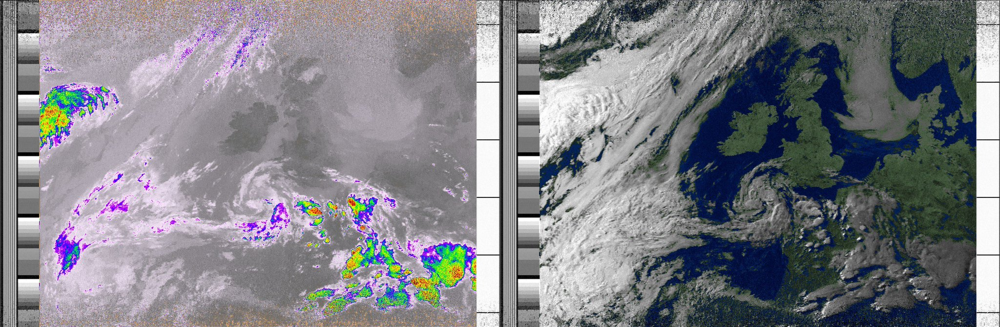

Receiving NOAA weather satellite images
Thu Aug 9 09:58:20 UTC 2018
Since 1960, The National Oceanic and Atmospheric Administration (NOAA) have operated a series of weather satellites as part of the Polar-orbiting Operational Environmental Satellite (POES) programme. The programme has since ended and will be superseded by the Joint Polar Satellite System (JPSS) of which the first satellite was launched at the end of 2017.

(TIROS v1 - Television Infrared Observation Satellite launched in 1960. Img src: NOAA POES history)
The first POES satellite, the TIROS 1 (shown above), was intended to test the effectiveness of satellites for remote sensing and earth observation. The satellite was a great success, and was immediately of use in weather forecasting. TIROS 1 captured this first (beautiful) TV image of the earth:

(Img src: wikipedia. Original: NASA)
Whilst TIROS 1 is *still* hurtling around the earth at 16848 mph, the current POES system consists of 3 TIROS-N satellites: NOAA 15, 18, 19, launched in 1998, 2005, and 2009 respectively.
These 3 1,457 kilo satellites orbit at ~520 miles altitude, at the same speed of TIROS 1 (16848 mph) such that each craft completes a trip around the circumference of the Earth in ~101 minutes: the satellites follow a particular orbit type known as Sun-synchronous orbit (SSO). The orbit guarantees that each point on the Earth will be observed at least once every 12 hours.
The satellites transmit on-board sensor data in High-resolution picture transmission (HRPT) and Automatic Picture Transmission (APT) at ~1700 MHz, ~137 MHz respectively. In the world of amateur radio and earth observation, it is well known and quite a popular pursuit to capture and decode APT data, and more so since the advent of RTL-SDR. Since reading a number of guides on how to intercept and decode the images continuously transmitted from these satellites, I have been keen to give it a go myself.
Tracking the satellites
As mentioned before, the three NOAA satellites each make a complete orbit in ~101 minutes. In order to capture the APT transmission from a satellite, it must first be within line of sight of the base station/receiver.
The US air-force keeps track of all orbiting objects and maintains a two-line element set (TLE) for each tracked object. This format, which is described in great detail on the celestrak site, was originally intended for punch-card machines and contains a minimal set of parameters which can be used to derive the trajectory of an orbiting object. The TLE data for the NOAA satellites is available from celestrak.
Fortunately, many projects exist to decode this format. pyorbital and py-sgp4 are some python options, satellite-js seems like a popular javascript implementation. A neat UI option might be termtrack - a console based satellite tracking UI and the popular and well-established gpredict, which I have used here.
Having specified the location of a base station, gpredict will track the location of specified satellites and calculate the precise time, location and track of future passes with respect to the horizon to horizon view of the base station. When a NOAA satellite passes overhead, it will be possible to receive it's APT transmission which will be strongest when the satellite is directly overhead and weakest as it ascends/descends from/to the horizon.
I find the "sky at a glance" feature very useful as it provides a schedule of upcoming passes for each of the satellites I am tracking. Currently, I will head outside to receive the transmission from time to time, although plan to automate this later on.
Quadrifilar Helicoidal Antenna (QFH)
To receive the APT signal, it is necessary to use either a turnstile or a QFH antenna. The QFH antenna is apparently the best option, with many guides on how to construct it.
I have wanted to make one of these antennas for a long time now, however found the design quite confusing. One of the first guides I read was by the late Julian Moss (G4ILO). I found Julian's guide invaluable in understanding the wiring and eventually used this design along with the default settings for this QFH calculator.
{kind=link}

Most guides make use of PVC piping to construct the frame. After some experimentation, I managed to make a frame using a few garden canes cut to the dimensions specified by the QFH calculator along with lots of cable zip ties. For the antenna, I have made use of 50 ohm coaxial cable, as per the G4ILO guide.
The resulting antenna, shown above attached to my bike work stand is surprisingly stable, despite being made from cane. It has the added bonus of being a little more environmentally friendly than the PVC version :) Construction of the antenna has been one of the most enjoyable parts of the project for me.
Receiving the signal
The NOAA satellites transmit Automatic Picture Transmission (APT) on the following frequencies:
| NOAA 15 | 137.62 MHz |
| NOAA 18 | 137.9125 MHz |
| NOAA 19 | 137.1 MHz |
I am using Gqrx SDR in combination with a cheap RTL2832U USB TV dongle attached to my QFH antenna to record the NOAA APT transmissions. To capture one of the signals, I first wait until one of the satellites enters range with Gpredict, then record the transmission for as long as possible as the satellite passes from horizon to horizon.
The APT data, which is transmitted as an audible FM signal is an interesting format. The Signal identification guide site describes the format in lots of detail as does the wikipedia page. Briefly, the transmission consists of a pair of 4km per pixel 8-bit images, synchronisation and telemetry data. The images are obtained from an advanced very-high-resolution radiometer (AVHRR) sensor, one of which is long-wave infrared and the other mid-wave infrared or near-visible if the satellite is in daylight.
(Img src: Signal identification wiki)
The image (which contains both infrared, visible and sychronisation data) is transmitted at a rate of 2 lines per second. Each line is 2080 pixels containing 2*909 image pixels and 262 pixels of synchronisation data.
As the satellite travels overhead, the signal drifts, exhibiting a doppler shift as shown above for a NOAA 19 pass. The actual signal sounds like this:
Having recorded the pass using Gqrx, the next step is to convert the audible signal into an image. I hope to write my own code to do this at some point, but for now, have made use of WXtoImg. WXtoImg takes as input a .wav containing the APT signal and outputs the raw greyscale image data, false colour images and can even overlay a cloud-cover heatmap indicating precipitation probability derived from a multispectral analysis,
NOAA 15
NOAA 15 is the oldest of the operational NOAA satellites, launched on 1998-05-13.
(Img src: Wikipedia original src dead. Also, I think this is NOAA 17)
In the 1960s, TIROS v1 made a significant impact on weather forecasting capability. Later, toward the end of the 1990s, NOAA 15, with it's microwave sounding unit capable of detecting temperature and humidity, significantly improved forecasting capability, especially in the southern hemisphere where there were fewer weather observations.
(Img src: NOAA/twitter)
So far, I have captured a couple of images from NOAA 15, shown below. The first shows the raw image format described by the APT protocol: 2 909 pixel wide images along with synchronisation and telemetry data in the left and right margins.
(2018-07-03)
The image on the left is from the infrared sensor and has been post-processed with the wxtoimg tool to show precipitation probability. The right hand side image is from the near-visible sensor and has been artificially coloured.
(2018-07-01)
The image above shows a raw greyscale image with no post-processing. I captured this image with an earlier attempt at the QFH antenna: notice the substantial noise and signal drop-outs. The drop-outs are actually due to poor wire connectivity and me moving around a bit while recording the signal.
NOAA 18
After NOAA 15, there was NOAA 16 + 17. NOAA 17 was decommissioned in 2013, whereas NOAA 16, after a critical failure was decommissioned in 2014. NOAA 16 has since broken up, and now consists of 275 individually tracked objects! (see wikipedia article.
(Img src: wikipedia original: NOAA NESDIS Environmental Visualization Laboratory)
NOAA 18 is thus the next (operational) satellite in the series. It was launched on 20-05-2005. Note that the NOAA craft all have their own QFH antenna, clearly visible in this image of NOAA 18:
(Img src: space.com original: NASA/KSC)
The following image is by far the most interesting image I have captured from NOAA 18 so far. It shows a clear view of the Bay of Biscay and edge of the Mediterranean sea. The noise at the top and bottom of the image is due to buildings and hills on my horizon. Open the image in a new tab for a higher resolution view.
(2018-07-09 08:53 UTC)
In the following image, (I think) the wavelength of the sensor has been switched part way through image capture as the satellite enters a nocturnal orbit.
(2018-07-04)
The following is the first image I managed to receive using an early version of the QFH antenna. The image was received at sunset which emphasises cloud features. Whilst not a particularly interesting image, it was a nice moment when decoded.
(2018-06-30)
NOAA 19
NOAA 19 was launched 2009-02-06 and is the last satellite in the POES programme.
(Image: Lockheed Martin. src)

(Image: NASA. src)
During manufacture, the satellite detached from it's base which caused $135 million in damage. Oops. More info on the Wikipedia page and the official NASA report.

(Image: NASA. src)
I have captured a few images from NOAA 19. This is the most recent one:
(2018-07-31 15:36 UTC)
The image below is my favourite so far - open the image in a new tab for a higher resolution view. It shows a reflection of the sun in the North Atlantic Ocean, central Europe and even the Strait of Gibraltar in the noisy part of the image.
(2018-07-13 15:30 UTC)
This final image shows the UK, Norway and Sweden quite well. It was taken during a recent spell of warm weather - much of the UK is cloud free.
(2018-07-05 15:15 UTC)
Summary
I plan to automate this whole process and combine the weather satellite images with data from my weather station. For now, it is quite fun to go out into the garden once in a while to capture an instantaneous image as a satellite passes overhead. I'm planning to record some passes from the peak of a local (> 300m) hill which I hope will be free of the noise near the horizon in my current images.
When I have automated this process, I plan to try and receive High-resolution picture transmission (HRPTs) from the same series of satellites.
Further reading
GEO Newsletter 58 - Twenty Years of NOAA 15 Reception from The Independent Organisation for Weather Satellite and Earth Observation Enthusiasts.
EOF